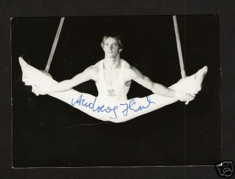

Andreas Hirsch (GDR)
1978 Riga Intl. HB Bronze Medalist

Andreas was born on July 8, 1958, and trained at SC Dynamo Berlin. He caught the eyes of GDR national team coaches with his performance at the 1972 Children's Spartakiade. He was put on the junior national team and took part in his first international meet in 1976 (in Italy). Andreas was the alternate at the 1978 World Championships in Strasbourg, but injuries kept him from reaching his true potential. He retired from gymnastics in 1983 and that same year began working as a coach in his Berlin club. He earned his coaching degree in 1986. Married with two children, Andreas has been the head coach of Germany's men's team since 2002.
Competition Results
1974
Jr. Friendship Tournament (Druzhba): 2nd Team, 3rd V
1975
Jr. Friendship Tournament (Druzhba): 2nd Team, 3rd PB, 6th R
1976
Jr. Friendship Tournament (Druzhba): 3rd Team, 9th AA, 4th FX
1977
GDR Championships: 5th AA
GDR-SUI Dual Meet: 1st Team, 10th AA
1978
Calgary International: 4th AA
GDR Championships: 5th AA
GDR-ROM Dual Meet: 1st Team, 12th AA
GDR-USSR Dual Meet: 2nd Team, 11th AA
Moscow News International: 11th AA
Ontario Cup: 3rd AA
Riga International: 14th AA, 3rd HB
1979
Champions All: 4th AA
GDR Championships: 2nd R, 8th PB
1981
Dynamo Spartakiade: 6th AA
1982
DTB Cup: 9th AA
GDR-HUN Dual Meet: 1st Team, 4th AA
GDR-USSR-SUI Meet: 1st Team, 10th AA
Hungarian International: 8th AA
This page was created on August 1,
2009.
© Gymn Forum